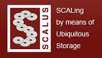

")
")
SCALUS
Storage research increasingly gains importance based on the tremendous need for storage capacity and I/O performance. Over the past years, several trends have considerably changed the design of storage systems, starting from new storage media over the widespread use of storage area networks, up to grid and cloud storage concepts. Furthermore, to achieve cost efficiency, storage systems are increasingly assembled from commodity components. Thus, we are in the middle of an evolution towards a new storage architecture made of many decentralized commodity components with increased processing and communication capabilities, which requires the introduction of new concepts to benefit from the resulting architectural opportunities.
The consortium of this Marie Curie Initial Training Network (MCITN) "SCALing by means of Ubiquitous Storage (SCALUS)" aims at elevating education, research, and development inside this exciting area with a focus on cluster, grid, and cloud storage.
The vision of this MCITN is to deliver the foundation for ubiquitous storage systems, which can be scaled in arbitrary directions (capacity, performance, distance, security).
Providing ubiquitous storage will become a major demand for future IT systems and leadership in this area can have significant impact on European competitiveness in IT technology. To get this leadership, it is necessary to invest into storage education and research and to bridge the current gap between local storage, cluster storage, grid storage, and cloud storage. The consortium will proceed into the direction by building the first interdisciplinary teaching and research network on storage issues. It consists of top European institutes and companies in storage and cluster technology, building a demanding but rewarding interdisciplinary environment for young researchers.
Web page: http://www.scalus.eu
OEG's role in SCALUS
UPM will be involved in the co-supervision of 4 ESRs (Early Stage Researchers) for the following jobs:
ESR 3: Autonomic Replica Management
Caching and replications are two very similar concepts that traditionally have been kept separated in large distributed environments. The objective of this work taking part at the the Barcelona Supercomputing Center is to use client side caching (both memory and disk) to improve redundancy and performance. In addition, replication will not only target read-only files, but also read-write files. The student assigned to this topic will have to propose data distribution and location mechanisms that integrate both caching and replication in an intelligent and automatic way. Finally, it is important that the proposed mechanisms scale to WAN as well as allow a better cooperation between resources.
ESR 11: Autonomic Management of Data Grids and Cloud Storage
Data Grids and Cloud Storage are environments characterized by their complexity and dynamism. Therefore, the resource management in such large-scale environments is complex and decisions taken at one time may be counterproductive in a short time later. Knowing the future state of the environment is essential to implement policies tailored to each situation. The student assigned to this issue at Universidad Politecnica de Madrid will have to develop an autonomous prediction system that enables the enhanced management of storage resources in these environments.
ESR 12: High-performance, Secure and Fault Tolerant Grid File System
Fault tolerance is an issue that has not been adequately addressed in large-scale storage environments, due to the complexity of them. Knowing the behavior of these environments can help prevent certain failures, which results in improved fault tolerance. The student assigned to this topic at Universidad Politecnica de Madrid will develop strategies for fault tolerance based on the modeling of large-scale storage environments.
ESR 14: Towards a scalable, fault-tolerant, self-adaptive Cloud file system
Data-intensive applications running on Cloud infrastructures require features such as ?le sharing among rented virtual machines with a high throughput under heavy access concurrency. Such features are not fully supported by today's Cloud storage systems like S3, which is used in the EC2 Cloud. The KerData research team of INRIA Rennes designs and implements BlobSeer, a generic data-sharing platform which aims at providing support for storing massive data with fine-grained access control under heavy concurrency on large-scale distributed infrastructures. The goal of this PhD thesis is to explore the possibility to use BlobSeer as a storage substrate for a higher-level, scalable, fault-tolerant, self-adaptive cloud file system optimized for high-throughput, massively parallel data processing.
Participants
People involved in the development of the SCALUS project are:
Publications and other results
The project has just started and there are no publications or results.
Job opportunities
The recruitment phase is closed.

Created under Creative Commons License - 2015 OEG.